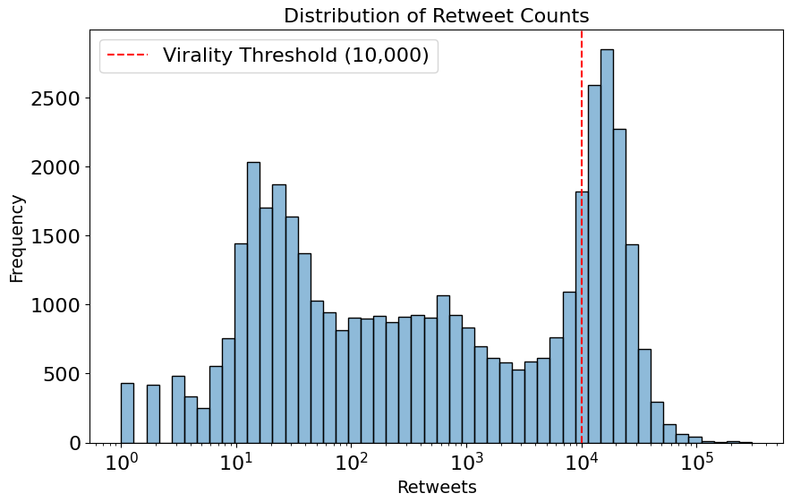
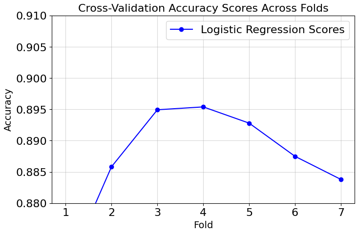

Social media is extremely valuable to companies, organizations, or individuals to promote themselves or some product. Users can choose to produce a high volume of content, as well as carefully create “viral” posts which can have a large influence for minimal cost. But what can contribute to making these viral posts, and how can we utilize these ideas? In this project (which was an assignment for CPSC 330), I explored this question using a dataset of tweets from former U.S. President Donald Trump. My objective was to predict whether a tweet would go viral (defined here as receiving more than 10,000 retweets) based solely on its text content.
The dataset contained 43,352 tweets posted by Trump up to June 2020. Each row represented a single tweet, including its timestamp, content, retweet count, favorite count, and metadata like mentions and hashtags. For this analysis, I focused only on the tweet text (content) and its retweet count (retweets). My target variable was a binary indicator of whether a tweet surpassed 10,000 retweets. The dataset's scale allowed robust analysis, but it also meant dealing with noisy text data and potentially biased patterns due to Trump’s unique tweeting style.
We can also take note of where most of the tweets end up in relation to our definition of viral in figure 1. Note that 10^4 is our threshold for a viral tweet.
Figure 1: Distribution of tweet retweets within the dataset
To predict virality, I used a logistic regression model, which is great for binary classification tasks. The text data was converted into numerical format using a CountVectorizer, which encodes text as word frequencies. This pipeline was evaluated using 4-fold cross-validation, ensuring that the model's performance was consistent across different data splits. In figure 2, we can see that 4-fold was chosen due to its optimal accuracy.
Baseline Comparison: Before applying logistic regression, I used a simple DummyClassifier, which always predicts the most frequent class (non-viral tweets). This baseline provided a useful benchmark.
Figure 2: Accuracy of different folds (higher = better)
Consider figure 3 which shows the top and bottom 5 words according to the coefficient score.
Figure 3: Word coefficient value in tweets (higher = high association with viral tweets)
The tweet with the highest predicted probability of virality was: "I will be giving a big speech at the MAGA rally tonight. Watch it live at 7 PM!" Predicted probability of virality: 99.3% This tweet likely scored high due to engaging language, a clear call-to-action, and alignment with Trump's audience's interests.
One way the results may be misleading is I did not spent a ton of time optimizing hyperparameters. For example, max_iter (maximum iterations) for the Logistic Regression was set to a arbitrary value when I could have spent more time testing out different ones. Tuning these more could yield better results.
Another way the results may be inaccurate is the use of just CountVectorizer. The tweets likely contain information that requires context so using a different strategy like text embedding would lead to better results. CountVectorizer just considers frequency of words which does not always capture the signficance of them.
Lastly, it would be useful to clean the data a bit and get rid of words that do not make a lot of sense. For example, the top 5 words are all distinct and real words, while 4/5 of the bottom ones are names or words combined into one. These likely are not that valuable for determining the best words for a viral tweet.